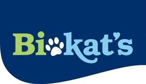

Trade Mark Journal No.2025/050 12 December 2025
WO0000001889022 (3,5,31)
Office of origin: European Union Intellectual Property Office (EUIPO)
Date of International Registration:13 October 2025
Date of designation in the UK:
13 October 2025

The mark contains the colours dark blue, green, white and light blue.
International priority date claimed: 6 May 2025
(European Union Intellectual Property Office (EUIPO))
(019182630)
- Class 3
- Bleaching preparations and other substances for laundry use; cleaning, polishing, scouring and abrasive preparations; soap; animal perfumes; preparations for use as room perfumes; ethereal oils; antiperspirants [toiletries], in particular based on essential oils; cosmetics; hair lotions; dentifrices; cosmetics for animals; goods for the mouth for animals, not for medical purposes; breath freshening aerosols for animals; shampoos for pets; deodorants for animals; scouring preparations for animals.
- Class 5
- Pharmaceutical and veterinary preparations; sanitary preparations for medical purposes; dietetic substances adapted for medical and veterinary use; pharmaceutical and medicinal complementary foodstuffs for animals and additives for foodstuffs for animals; preparations of fruits, vegetables and potatoes for use as animal feed supplements, not for medical purposes; vitamin concentrates, protein concentrates, calcium preparations, minerals, trace elements and electrolyte preparations, all for medical purposes and as additives for foodstuffs for animals, all the aforesaid goods in particular for administering to small animals, including rodents, dogs and cats; fungicides; disinfestation preparations for household pets and cattle, including in the form of powders, sprays or collars; medicated cleaning preparations for use with animals; disinfectants; animal feed supplements, not for veterinary purposes; supplements for animal foodstuffs, mineral additives to foodstuffs for animal consumption, not for medical purposes.
- Class 31
- Agricultural, horticultural and forestry products and grains, included in this class; fresh fruits and vegetables, potatoes and preparations made from these goods being non-medical foodstuffs for animals; seeds, live plants and flowers; foodstuffs for animals, including foodstuffs for rodents, dogs, cats, birds and fish, and biscuits, small delicacies and reward snacks; foodstuffs for animals, mixed feed, strengthening feed, rearing feed, mineral feed; edible playthings for animals, in particular chewing bones, digestible chewing bones and bars for domestic animals; malt; bedding for animals; bedding and litter for animals; bedding materials for household pets; loose litter material for animal toilets; cat litter; foodstuffs for use as additives to fodder.
H. von Gimborn GmbH
Representative: HOEFER & PARTNER PATENTANWÄLTE MBB, Pilgersheimer Str. 20, 81543 München, GERMANY